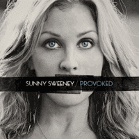

Sunny Sweeney - Provoked (Album, 2014)
01 - You Don't Know Your Husband (3:04)
02 - Bad Girl Phase (3:22)
03 - Second Guessing (4:31)
04 - Carolina On The Line (4:06)
05 - Find Me (4:15)
06 - Can't Let Go (3:02)
07 - Front Row Seats (3:33)
08 - My Bed (3:25)
09 - Uninvited (3:43)
10 - Sunday Dress (4:17)
11 - Used Cars (3:59)
12 - Backhanded Compliment (3:59)
13 - Everybody Else Can Kiss My Ass (3:34)
© Thirty Tigers :: [5290520] | © Aunt Daddy Records :: [Digital]
Notes
reference information: Discogs®
Review
366/366 (Project 366)
At the time of "Provoked" release - I accidentally got the opportunity to get acquainted with the work of this artist. Sunny Sweeney impressed me so much and so deep. This sound, tone, lyrics, vibe seemed so magical. Timeless, frameless. I decided not to study anything further around this album and involved musicians. Just enjoy these songs. And trying to feel something, learn about, understand her.. while listening. So, years later, she is still a mysterious lady to me. I still prefer to ingore all the information and learn from her songs, from her sound, from her notes, from her lyrics. Furthermore, it is attractive and with superb arrangements. All of these compositions and what a beautiful voice! My favorite songs were "Can't Let Go", "Everybody Else Can Kiss My Ass", "Backhanded Compliment" - but over time, "Used Cars" became my favorite, and other songs also became interesting to me. However, I could highlight the songs "Uninvited" and "Carolina On The Line". Whereas "Find Me" is just so vital.. and a masterpiece. The rest of the songs ("You Don't Know Your Husband", "Bad Girl Phase", "Second Guessing", "Front Row Seats", "My Bed (feat. Will Hoge)", "Sunday Dress") are generally about musicianship, refining, solid and topnotch numbers. Some of them are probably quite popular and in demand. Although they were not the most special for my taste, but I remember how I was amazed at the first listening to "Front Row Seats", and also how interesting the track "My Bed" appeared. While "Sunday Dress" is so intimate - "Bad Girl Phase" is more ironic and fancy. "You Don't Know Your Husband" and "Second Guessing" are great mighty songs. The album is mostly about Modern Country, Country Rock, Country Pop and Rock'n'Roll.
Today is "366/366" and I found this release the most suitable for review. So special, so exclusive, just the way it is. Listening to the album, the great accompaniment (probably by good musicians) and her vocals today, I find even more charm and heartiness.
Magnificent Country music with a worthy casualness. How much can be snapped up for quotes! What sparks in the performance of songs!! And this so a rather power, a pretty melodious and a somewhat rockin' sound!!! How lovely the sentiments sound. How beautifully expressed emotions. It's indescribable.